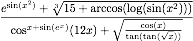

The Risch Algorithm: Part 2, Elementary Functions
In Part 1 of this series of blog posts, I gave what I believed to be the prerequisites to understanding the mathematics behind the Risch Algorithm (aside from a basic understanding of derivatives and integrals from calculus). In this post, I will elaborate on what is meant by "elementary function," a term that is thrown around a lot when talking about Risch integration.
The usual definition of elementary function given in calculus is any function that is a constant, a polynomial, an exponential ($latex e^x$, $latex 2^x$), a logarithm ($latex \ln({x})$, $latex \log_{10}({x})$), one of the standard trig functions or their inverses (sin, cos, tan, arcsin, arccos, arctan, etc.), and any combination of these functions via addition, subtraction, multiplication, division, taking powers, and composition. Thus, even a function as crazy as  is elementary, by this definition.
{kind=link}
But for the rigorous definition of an elementary function, we must take into consideration what field we are working over. Before I get into that, I need some definitions. Suppose that $latex k$ is the field we are working over. You can imagine that $latex k=\mathbb{Q}(x)$, the field of rational functions in x with rational number coefficients. As with the previous post, imagine $latex t$ as a function, for example, $latex t = f(x)$. Let $latex K$ be a differential extension of $latex k$. We have not defined this, but it basically means that our derivation $latex D$ works the same in $latex K$ as it does in $latex k$. You can imagine here that $latex K=k[t]$.
We say that $latex t \in K$ is a primitive over $latex k$ if $latex Dt \in k$. In other words, the derivative of $latex t$ is does not contain $latex t$, only elements of $latex k$. Obviously, by the definition of a derivation (see the last post in the series), any element of $latex k$ is a primitive over $latex K$, because the derivative of any element of a field is again an element of that field (you can see this by the definition of a derivation, also given in the last post). But also if $latex t=log(a)$ for some $latex a \in k$, then $latex t$ is a primitive over $latex k$, because $latex Dt=\frac{Da}{a}\in k$.
We say that $latex t \in K^*$ is a hyperexponential over $latex k$ if $latex \frac{Dt}{t}\in k$. Written another way, $latex Dt=at$ for some $latex a\in k$. We know from calculus that the functions that satisfy differential equations of the type $latex \frac{dy}{dx}=ay$ are exactly the exponential functions, i.e., $latex y=e^{\int{a\ dx}}$.
The last class of functions that needs to be considered is algebraic functions. I will not go into depth on algebraic functions, because my work this summer is only on integrating purely transcendental functions. Therefore, the only concern we shall have with algebraic functions in relation to the integration algorithm is to make sure that whatever function we are integrating is not algebraic, because the transcendental algorithms will not be valid if they are. Hopefully in a future post I will be able to discuss the Risch Structure Theorems, which give necessary and sufficient conditions for determing if a Liouvillian function (see next paragraph) is algebraic.
Now, we say that a function $latex t \in K$ is Liouvillian over $latex k$ if $latex t$ is algebraic, a primitive, or a hyperexponential over $latex k$. For $latex t\in K$ to be a Liouvillian monomial over $latex k$, we have the additional condition that $latex \mathrm{Const}(k) = \mathrm{Const}(k(t))$. This just means that we cannot consider something like $latex \log({2})$ over $latex \mathbb{Q}$ as a Liouvillian monomial. Otherwise (I believe) we could run into undecidability problems.
We call $latex t \in K$ a logarithm over $latex k$ if $latex Dt=\frac{Db}{b}$ for some $latex b \in k^$, i.e., $latex t=\log({b})$. We call $latex t \in K^$ an exponential over $latex k$ if $latex \frac{Dt}{t}=Db$ (or $latex Dt=tDb$) for some $latex b \in k$, i.e., $latex t=e^b$. Note the difference between an exponential monomial and a hyperexponential monomial.
We can finally give the rigorous definition of an elementary extension. $latex K$ is an elementary extension of $latex k$ if there are $latex t_1, \dots, t_n \in K$ such that $latex K=k(t_1,\dots,t_n)$ and $latex t_i$ is elementary over $latex k(t_1, \dots, t_{i-1})$ for all $latex i \in {1,\dots,n}$. An elementary function is any element of an elementary extension of $latex \mathbb{C}(x)$ with the derivation $latex D=\frac{d}{dx}$. A function $latex f\in k$ has an elementary integral over $latex k$ if there exists an elementary extension $latex K$ of $latex k$ and $latex g\in K$ such that $latex Dg=f$, i.e., $latex f=\int{g}$.
Usually, we start with $latex \mathbb{Q}(x)$, the field of rational functions in x with rational number coefficients. We then build up an elementary extension one function at a time, with each function either being a logarithm or exponential of what we have already built up, or algebraic over it. As I noted above, we will ignore algebraic functions here. We generally start with $latex \mathbb{Q}$ because it is computable (important problems such as the zero equivalence problem or the problem of determining certain field isomorphisms are decidable), but the above definition lets us start with any subfield of $latex \mathbb{C}$.
Now you may be wondering: we've covered algebraic functions, exponentials and logarithms, and obviously rational functions are elements of $latex \mathbb{Q}(x)$, but what about trigonometric functions? Well, from a theoretical stand point, we can make our lives easier by noticing that all the common trigonometric functions can be represented as exponentials and logarithms over $latex \mathbb{Q}(i)$. For example, $latex \cos{x} = \frac{e^{ix} + e^{-ix}}{2}$. You can see here that all the common trig functions can be represented as complex exponentials or logarithms like this. However, from an algorithmic standpoint, we don't want do convert all trig expressions into complex exponentials and logarithms in order to integrate them. For one thing, our final result will be in terms of complex exponentials and logarithms, not the original functions we started with, and converting them back may or may not be an easy thing to do. Also, aside from the fact that we have different functions than we were expecting, we also will end up with an answer containing $latex \sqrt{-1}$, even if our original integrand did not.
Fortunately, the integrating tangents directly is a solved problem, just like integrating algebraic, exponential, or logarithmic functions is solved. We can't integrate functions like $latex \sin{x}$ or $latex \cos{x}$ directly as monomials like we can with $latex \tan{x}$ or $latex e^x$, because the derivatives of sin and cos are not polynomials in their respective selves with coefficients in $latex \mathbb{C}(x)$. However, we can use a trick or two to integrate them. One way is to rewrite $latex \cos{x}=\frac{1 - \tan^2{\frac{x}{2}}}{1 + \tan^2{\frac{x}{2}}}$ and proceed to integrate it as a tangent. Another alternative is to write $latex \cos{x}=\frac{1}{\sec{x}}=\sqrt{\frac{1}{\sec^2{x}}}=\sqrt{\frac{1}{\tan^2{x} + 1}}$. This function is algebraic over $latex \mathbb{Q}(x, \tan{(x)})$, but if we do not already have $latex \tan{x}$ in our differential extension, it is transcendental, and we can rewrite it as $latex e^{-\frac{\log{(1 + \tan^2{x})}}{2}}$ (this is used in Bronstein's text, so I believe what I just said is correct, though I haven't verified it with the structure theorems just yet). These both work using the relevant identities for sin too. Of course, there is still the problem of rewriting the final integrand back in terms of sin or cos. Otherwise, you will get something like $latex \frac{2e^x\tan({\frac{x}{2}}) - \tan^2({\frac{x}{2}})e^x + e^x}{2 + 2\tan^2({\frac{x}{2}})}$ instead of $latex \frac{e^x(\sin{(x)} + \cos{(x)})}{2}$ for $latex \int{\cos{(x)}e^xdx}$. Bronstein doesn't elaborate on this too much in his book, so it is something that I will have to figure out on my own.
The second option I gave above leads nicely into the main point I wanted to make here about elementary functions. Notice that everywhere in the definitions above, things depend on the field we are working in. Therefore, $latex e^{\tan{x}}$ cannot be an elementary extension over $latex \mathbb{Q}(x)$, but it can be over $latex \mathbb{Q}(x, \tan{x})$. Also, the error function, defined as $latex \mathrm{erf}{(x)} = \frac{2}{\sqrt{\pi}}\int{e^{-x^2}dx}$ cannot be an elementary extension over $latex \mathbb{Q}(x)$, but it can over $latex \mathbb{Q}(x, e^{-x^2})$. In fact this is how we can integrate in terms of some special functions, including the error function: by manually adding $latex e^{-x^2}$ (or whatever) to our differential extension. Therefore, the usual definition of an elementary anti-derivaitve and the above Risch Algorithm definition of an elementary integral coincide only when the extension consists only of elementary functions of the form of the usual definition (note that above, our final fields are $latex \mathbb{Q}(x, \tan{x}, e^{\tan{x}})$ and $latex \mathbb{Q}(x, e^{-x^2}, \mathrm{erf}{(x)})$, respectively).
Originally, I was also going to talk about Liouville's Theorem in this blog post, but I think it has already gotten long enough (read "I'm getting tired"), so I'll put that off until next time.
Comments
Comments powered by Disqus